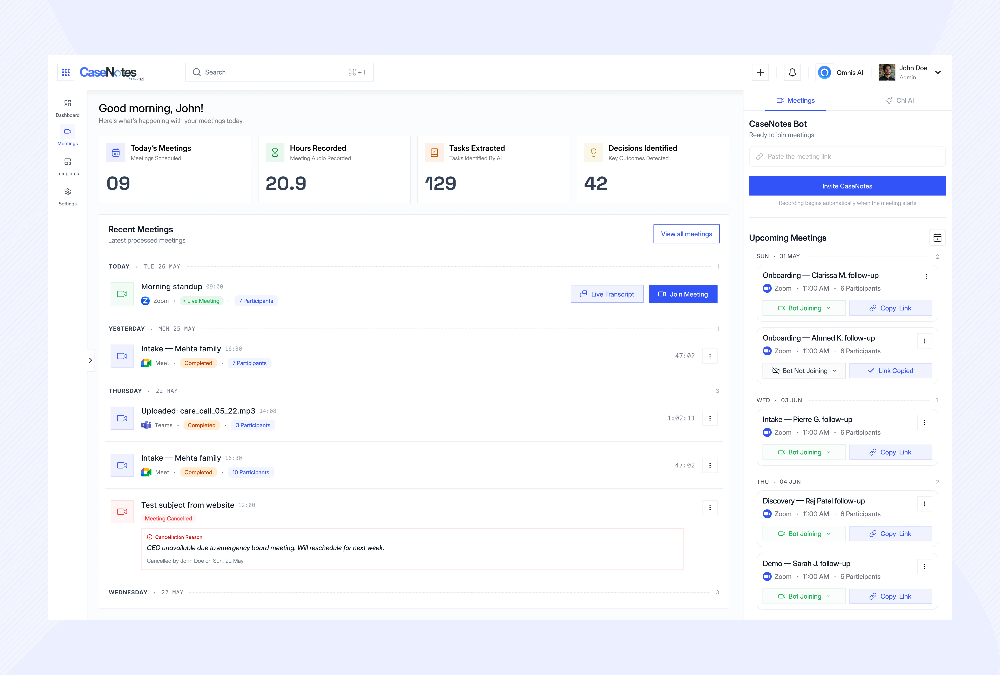
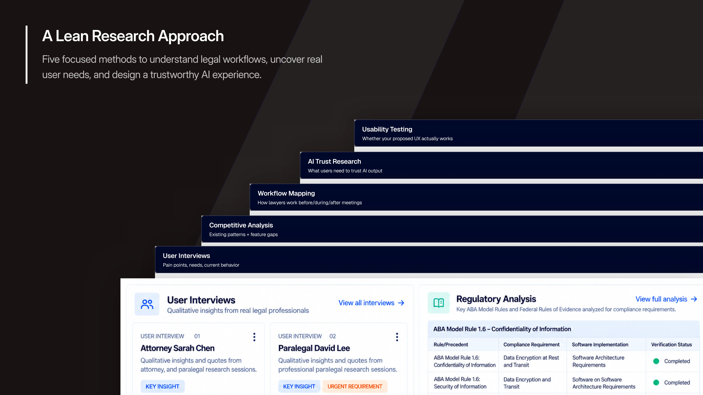
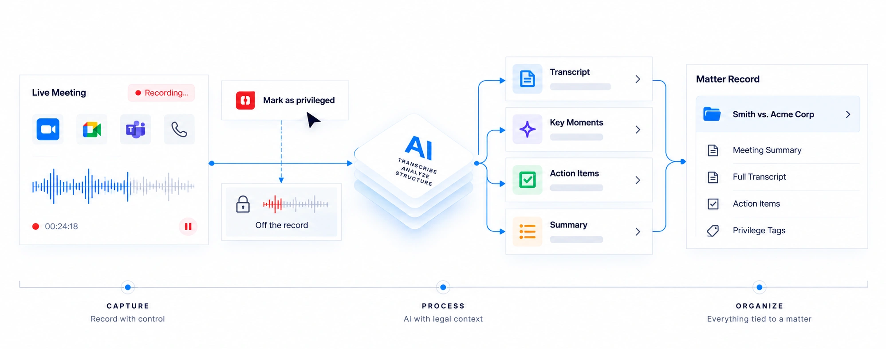
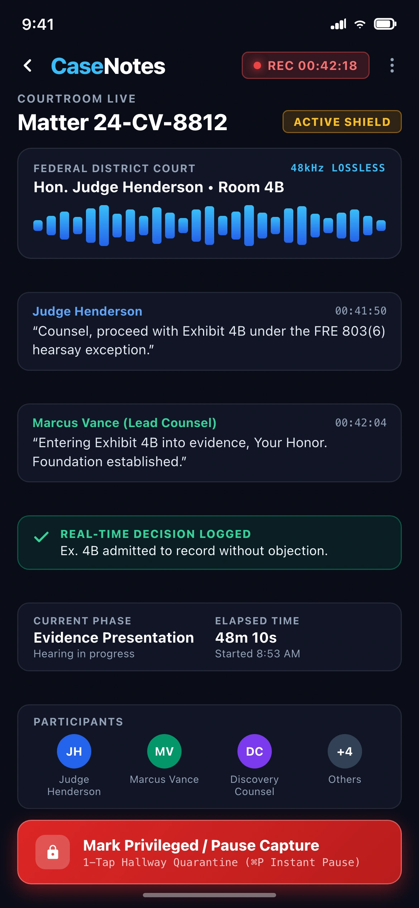
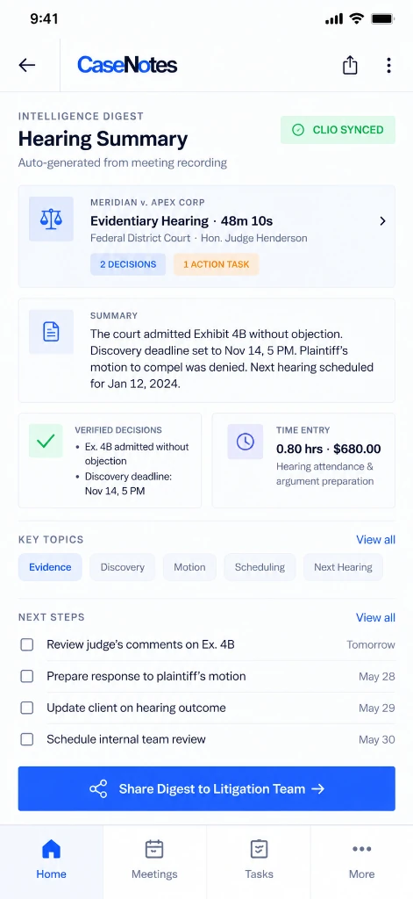
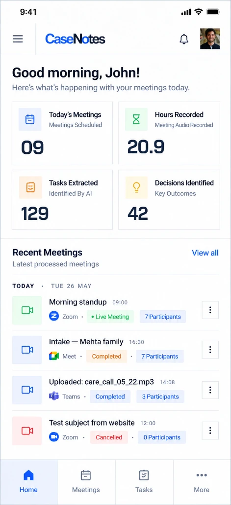
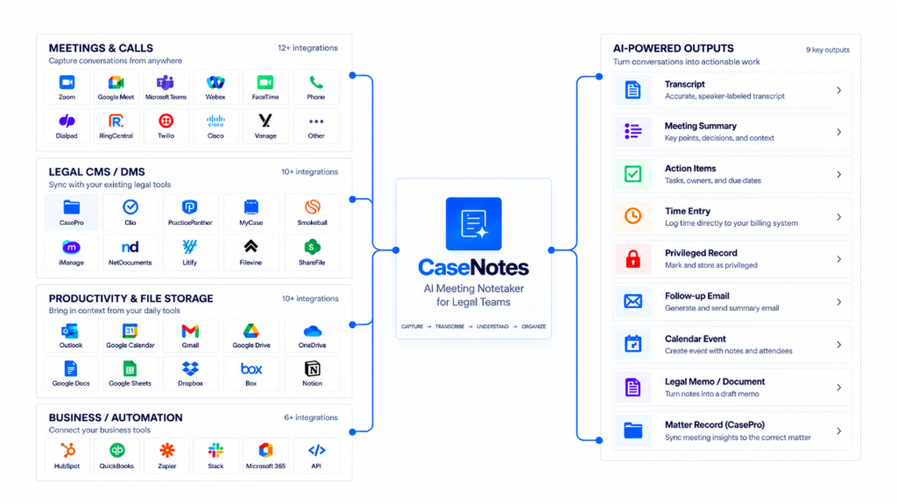

Every client call is part of a case. I designed a notetaker that treats it that way.
CaseNotes records and summarizes legal meetings, files the notes to the right matter, and lets a lawyer go off the record with one keystroke.
- Role
- Founding product designer, 0 to 1
- Users
- Partners, associates, paralegals
- Domain
- Legal-tech meeting intelligence
- Status
- Pre-launch beta

Live client meetings observed, then follow-up interviews, across four firms before a screen was drawn.
Of legal testers would trust it on privileged client calls.
Per matter, weekly, on note re-entry and billing prep, in prototype testing.
Lawyers paused AI notetakers whenever talk turned to strategy, because consumer tools don't protect privilege. The notes had gaps, and paralegals re-typed them into three tools.
As founding designer, I set two rules every screen follows: the lawyer controls the record, and every note belongs to a matter. Then I designed the meeting flow, four role views and mobile.
Pre-launch beta. The numbers here come from prototype testing with legal teams, not production usage. Desktop screens are under NDA; I walk through them on a call.
01The problem
In law, a meeting is evidence.
Imagine you're an associate on a call with a client. The client starts talking about settlement numbers.
You reach over and pause the AI notetaker. Courts have said consumer AI tools don't preserve attorney-client privilege, so the recording could end up in discovery. Now there's a gap in the notes, and you rebuild it from memory.
After the call, a paralegal re-types the same notes into three different tools. And nothing connects this call to the deposition prep in October.
02What CaseNotes does
Capture the case, protect the privilege.
Generic notetakers treat every meeting the same. CaseNotes is built around three things a law firm needs:
Go off the record in one keystroke
The lawyer decides, in the moment, whether a record exists at all.
File every note to its matter
Summaries attach to the case, carry privilege tags, and stay behind ethical walls.
Remember the case, not the meeting
Decisions and deadlines connect across months of client and counsel sessions.
03What I saw
I sat in on 12 client meetings before drawing a screen.
I observed 12 live client meetings and case conferences across four small and midsize firms, then ran 7 follow-up interviews with partners, associates, and paralegals.
In 9 of the 12 meetings, associates paused or stopped the recording when the talk turned to settlement or strategy.
Pauses had no rules
Each associate used a personal habit to decide when to stop recording, so the firm's records were inconsistent.
Paralegals paid the price
They spent hours re-typing the same notes into practice management software, document drives, and billing logs.
Not every meeting is equal
Lawyers treat an internal huddle and a privileged client session differently. Their tools didn't.

04My role
I designed CaseNotes from zero.
| Area | What I did |
|---|---|
| Research | Shadowed 12 meetings, ran 7 interviews, and audited 12 AI notetakers including Fireflies, Otter, and Fathom. |
| Product thesis | Set the two principles every screen follows: the lawyer controls the record, and every output belongs to a matter. |
| Meeting flow | Designed what happens before, during, and after a call, including how the AI behaves. |
| Roles | Defined four views so partners, associates, paralegals, and clients each see only what they should. |
| Mobile & integrations | Designed the mobile companion and how notes sync to Clio, NetDocuments, and the rest of Omnis. |
05One meeting
What happens before, during, and after a call?
Every meeting moves through three moments. Each one answers a different question for the lawyer.
The desktop screens are under NDA, so I walk through them on a call. The diagram shows how capture is routed.
- 01 · Before
Is this call privileged?
CaseNotes checks the calendar and the matter. Litigation calls start as privileged and restricted; firm admin meetings start open.
Safe default per matter - 02 · During
Is it recording right now?
The interface stays quiet: no bot avatar, no scrolling transcript. A small indicator shows when it's recording, and one shortcut pauses it.
One keystroke to pause - 03 · After
Where did it go?
The summary files to the case: decisions, owners, deadlines, and privilege tags per segment. The raw transcript sits in a secondary drawer.
Filed to the matter

06Privilege
How do I go off the record?
One keystroke, ⌘+P on desktop or one tap on mobile, pauses capture mid-sentence and marks that segment privileged.
The screen switches to a high-contrast state so everyone can see nothing is being recorded. If opposing counsel walks in, one tap is enough.

07AI you can check
Can I trust what the AI wrote?
CaseNotes only summarizes what someone said. If a term wasn't discussed, it says so instead of guessing.
Every point links to the exact moment in the audio, so a lawyer can verify it in seconds. Client data never trains the AI models.


08Roles
Who sees what?
The same meeting shows up differently for each person, based on what their job needs and what the ethics rules allow.
| Role | What they see from the same meeting |
|---|---|
| Partner | Decisions, risk, billable time, and staffing. |
| Associate | Research tasks, drafting deadlines, and cited sources. |
| Paralegal | Filing dates, document requests, and docket items. |
| Client | A plain-language digest. Privileged notes are removed before display. |
09Integrations
Where do the notes go?
Into the tools the firm already uses. Summaries, deadlines, and time entries push to Clio, PracticePanther, or MyCase. Memos go to NetDocuments or iManage with the firm's existing permissions.
Inside Omnis, notes feed the CRM, MedChron timelines, and LitDraft documents.

10Design decisions
Four calls that shaped CaseNotes.
Why does the lawyer control recording?
Associates were already pausing recorders by habit. Making it one keystroke, and visible to everyone, turned a private workaround into a firm-wide rule.
Why file notes to a matter?
A lawyer thinks in cases, not meetings. Attaching every summary to its matter is what lets March's settlement talk connect to October's deposition prep.
Why hide the raw transcript?
The transcript is evidence; the summary is what the lawyer needs. Leading with the summary keeps less discoverable text in front of people.
Why only summarize what was said?
In litigation, an invented fact can lead to court sanctions. Grounding every point in the audio is what makes the AI usable at all.
11Results
What prototype testing showed.
Finding a matter's privilege status.
On privileged client calls.
Across partner and associate testers.
Per matter, weekly, on note re-entry and billing prep.
12Looking back
What CaseNotes taught me.
Compliance is a design input
Most AI products add compliance after the design is done. In law it has to shape the first screen.
Defaults are decisions
Whether a call starts privileged or open is a product choice with legal weight. A wrong default creates a liability.
Design the system, then the screens
The matter-linked structure did more for lawyers than any single screen, because it made every other feature possible.
 I replaced OmnisProof's disjointed modal wizard and manual field placement with a persistent canvas and reviewable AI detection.
I replaced OmnisProof's disjointed modal wizard and manual field placement with a persistent canvas and reviewable AI detection.
 Designing an autonomous staging review engine that detects UI regressions, verifies accessibility, and delivers developer-ready PR reports in Slack.
Designing an autonomous staging review engine that detects UI regressions, verifies accessibility, and delivers developer-ready PR reports in Slack.
 I split a merged intake-and-matter form into two linked systems: an AI-assisted path and a manual path into each new matter.
I split a merged intake-and-matter form into two linked systems: an AI-assisted path and a manual path into each new matter.